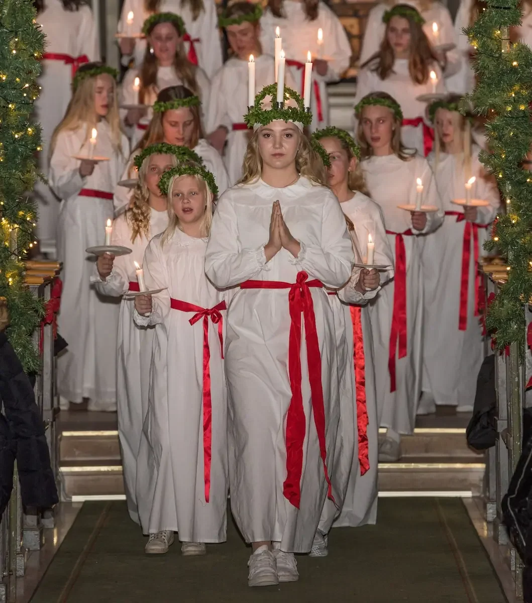
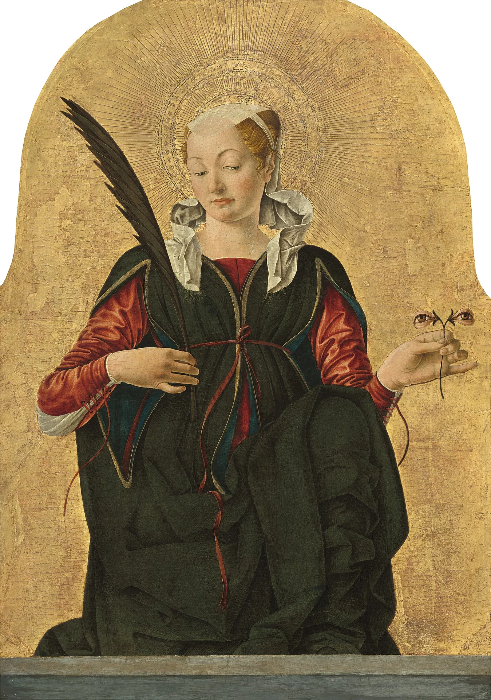
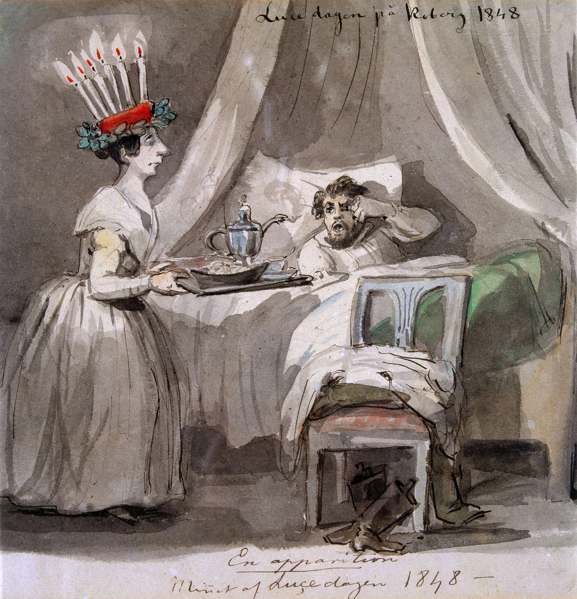

아직 펼치지 않은 카드빛을 들고 오는 사람들 · 2스웨덴의 루치아 행렬한겨울 어둠 속, 머리에 촛불을 인 소녀가 걸어 들어와요. 누구일까요?머리에 촛불을 쓴 언니가 있어! 뜨겁지 않을까?
1848년 12월, 루치아의 날 아침스웨덴 서부 · 코베리 성
스웨덴의 루치아 행렬
1848년 12월, 스웨덴 서부의 코베리 성. 루치아의 날 이른 아침, 머리에 촛불을 인 루치아가 침실로 들어왔어요. 지금 남아 있는 가장 오래된 루치아 그림 속 그 방을, 촛불로 비춰 보세요.
옛날 스웨덴의 큰 성에서, 이른 아침에 머리에 촛불을 쓴 루치아가 방으로 들어왔대. 우리도 촛불을 들고 그 방을 비춰 볼까?
검수 전 시안이에요(기준서 1판). 장면에는 노르디스카 박물관과 스웨덴 교회 등의 기록에 있는 것만 옮겼고, 전해지는 이야기는 그렇다고 밝혔어요. 상상은 ‘눈 감고 상상해 보기’에만 썼어요.
시안 확인용카드 단계 미리 보기
1
‘빛’이라는 이름
루치아(Lucia)는 이탈리아 시칠리아섬의 도시 시라쿠사(Siracusa)에 살던 그리스도인이에요. 성인 이야기에 따르면 304년 12월 13일, 로마 황제 디오클레티아누스가 그리스도인을 붙잡아 벌하던 때에 목숨을 잃었어요.
이름은 라틴어로 ‘빛’을 뜻하는 ‘룩스(lux)’와 이어져요. 그래서 루치아는 빛, 그리고 눈을 지켜 주는 성인으로 기억되어 왔어요.

이 그림은 이탈리아 화가 프란체스코 델 코사가 1473년 무렵 볼로냐 산 페트로니오 성당의 제단 그림(제단화)으로 그린 루치아예요. 한 손에 종려나무 잎을, 다른 손에는 꽃처럼 줄기에 달린 두 눈을 들었어요. 중세 화가들은 루치아를 이렇게 눈과 함께 그리곤 했어요.
숨어 지내는 그리스도인들에게 먹을 것을 나르던 루치아가, 두 손을 다 쓰려고 촛불을 머리에 얹었다는 이야기도 있어요. 옛 기록이 아니라 전해지는 이야기예요.
루치아는 아주 옛날 이탈리아 시칠리아섬에 살던 사람이야. 이름에 ‘빛’이라는 뜻이 들어 있대.
물어보기그림 속 루치아의 두 손을 봐. 무엇을 들고 있을까?
2
가장 긴 밤의 손님
옛 달력(율리우스력)으로는 루치아의 밤이 한 해 가운데 가장 긴 밤이었어요. 옛 스웨덴 농촌에서는 이 밤에 트롤(북유럽 옛이야기의 괴물)과 나쁜 영이 돌아다닌다고 믿었고, 일을 하지 말라는 곳도 많았어요. 새벽이 밝아야 잔치가 시작됐어요.
흰 옷을 입고 찾아오는 루치아는 1764년, 스웨덴 서부의 호른(Horn) 저택 기록에 처음 나와요. 천사 날개를 달고 촛대를 든 루치아가 아침에 사람들을 찾아가 먹을거리를 대접했어요.
“현관 쪽 두 짝 문이 활짝 열리더니, 흰 홑이불을 두른 일꾼이 들어왔다. … 원래는 하녀가 맡아야 했다. 그는 성 루치아를 나타내는 것이었으니까. 그러나 아마도 짐 때문에, 근래에는 그 일에 남자를 쓰게 되었다.”
스킨스카테베리에서 일하던 한 감독관의 1820년대 기록 · 스웨덴어를 이 안내서가 우리말로 옮김(스웨덴 교회 헬싱보리 교구의 소개에서)
그 일꾼은 머리에 촛불 관을 쓰고, 데운 포도주가 담긴 큰 그릇을 들고 있었대요. 노르디스카 박물관은 이것을 머리에 촛불을 인 루치아가 나오는, 지금까지 알려진 가장 이른 기록으로 소개해요.
옛날 스웨덴에서는 루치아의 밤이 1년 중 가장 긴 밤이었대. 그 밤이 지나고 아침이 오면, 흰 옷을 입은 루치아가 촛불을 들고 찾아왔어.
물어보기머리에 촛불을 쓰고 무거운 그릇까지 들면 어떨까? 어떻게 걸어야 할까?
3
1848년, 코베리의 아침
1848년 12월, 스웨덴 서부 트롤헤탄 남동쪽의 코베리 성. 화가 프리츠 폰 다르델(Fritz von Dardel)이 이 성의 루치아 아침을 수채화로 그렸어요. 노르디스카 박물관은 이 그림을 지금 남아 있는 가장 오래된 루치아 그림으로 소개해요.
그림 속 루치아는 촛불을 꽂은 높은 관을 쓰고, 은 주전자를 얹은 쟁반을 들고 침실로 들어와요. 커튼 드리운 침대에서는 한 남자가 막 몸을 일으켜요. 촛불을 든 루치아처럼, 어두운 방을 비춰 보세요.
손가락이나 마우스로 문질러, 촛불처럼 방을 비춰 보세요.

「코베리의 루치아」, 1848년 12월 · 프리츠 폰 다르델 수채화(노르디스카 박물관) · 퍼블릭 도메인 · 위키미디어 공용
빛이 닿으면 숨은 표시가 나타나요.
촛불 관과 쟁반, 침대 속의 남자까지 다 찾았어요. 그림 아래 손글씨는 이 아침을 ‘유령의 등장’이라고 불러요.
촛불 관을 쓰고 쟁반을 든 루치아가 아침에 찾아오는 풍습은, 처음에 스웨덴 서부의 상류층 집안에서 하던 것이었어요. 19세기 중반에는 대학이 있는 도시들로 퍼졌어요.
그림 속 성은 1890년대에 옛 성의 일부를 살려 지금 모습으로 다시 지었어요. 1782년부터 한 가문이 대를 이어 지켜 오는 영지예요.
깜깜한 아침, 촛불을 쓴 루치아가 방에 들어왔어! 우리도 촛불을 들고 방을 비춰 보자.
물어보기방 안에서 무엇이 보여? 누가 잠에서 깼을까?
4
거리로 나온 루치아
1893년, 스톡홀름의 야외 박물관 스칸센이 서부 지방의 옛 풍습을 보여 주려고 루치아 행렬을 열었어요. 1927년 12월 13일에는 신문 『스톡홀름 다그블라드』가 대회로 뽑은 루치아가, 머리에 전기 불빛을 달고 시내를 행진했어요.
그 뒤 다른 신문들도 저마다 루치아를 뽑았고, 1950년대에는 스웨덴 곳곳에 퍼졌어요. 흰 옷의 시녀들이 둘씩 촛불을 들고 따르고, 중세 교회의 동방박사 연극에서 온 ‘별 소년’들도 함께 걸어요.
행렬이 부르는 「산타 루치아」의 가락은 1849년 이탈리아 나폴리에서 처음 인쇄된 노래예요. 성인이 아니라 나폴리 바닷가 마을 ‘산타 루치아’를 노래한 곡이에요. 스웨덴 말 노랫말은 1920년대에 붙었어요.
1944년에는 독일군이 점령한 덴마크에서도 첫 루치아 행렬이 열렸어요. 노르디스카 박물관은 이것을 점령에 맞선 소리 없는 저항으로 소개해요.
루치아처럼 12월 13일 아침, 촛불과 먹을 것을 들고 간다면 어디로 갈까요?
지금은 스웨덴의 학교와 교회마다 루치아 행렬을 해. 흰 옷 입은 친구들이 둘씩 촛불을 들고 노래하며 걸어와.
물어보기너라면 행렬에서 루치아, 시녀, 별 소년 가운데 누가 되고 싶어?
눈 감고 상상해 보기
창밖은 아직 캄캄한 12월 아침이에요. 이불 속은 따뜻한데, 방 안 공기는 차가워요. 복도 끝에서 조심스러운 발소리가 다가와요. 문이 열리고, 작은 촛불 빛이 벽과 천장을 노랗게 물들여요. 따뜻한 마실 것 냄새가 함께 들어와요.
눈을 감아 봐. 아직 깜깜한 겨울 아침이야. 이불 속은 따뜻해. 문 밖에서 발소리가 들리더니, 문이 열리고 촛불이 반짝여!
나의 자리
가장 어두운 때에, 나는 누구에게 작은 빛을 들고 갈 수 있을까요?
깜깜할 때 누가 불을 켜 주면 어떤 기분이야?
마음에 닿는 한 줄을 고르거나 직접 써 보세요. 한 줄을 남기면 이 자리의 도장이 찍혀요. 이 기기에만 저장돼요.
더 깊이
궁금한 칸만 펼쳐 읽어도 괜찮아요.
알고 보면
남자 루치아 18~19세기 스웨덴의 대학에서는 남학생이 루치아를 맡기도 했어요. 1820년대 스킨스카테베리의 루치아도 남자 일꾼이었어요.
북쪽의 루치아 스웨덴 북부에는 루치아가 루치아의 밤에 초자연적인 존재들을 이끄는 ‘산의 여인’이라는 옛이야기도 전해요.
금발의 루치아? 20세기에 널리 퍼진 ‘금발의 루치아’ 모습에는 역사적인 근거가 없다고 노르디스카 박물관은 설명해요.
12월 13일 16세기까지 12월 13일은 교회의 루치아 축일이었어요. 그 뒤에도 옛 농촌에서는 이날 밤을 위험한 밤으로 여겼고, 다가올 해를 점쳐 보는 밤으로도 지냈어요.
기록마다 다른 점
1927년일까, 1928년일까 신문 『스톡홀름 다그블라드』가 처음 루치아를 뽑은 해를 덴마크 백과사전(lex.dk)과 스웨덴 교회는 1927년으로, 노르디스카 박물관은 1928년으로 적었어요.
스칸센의 첫 루치아 스칸센은 첫 루치아 행렬이 1893년이었다고 하고, 노르디스카 박물관의 연표는 1892년으로 적었어요.
촛불 관 이야기 루치아가 머리에 촛불을 얹고 먹을 것을 날랐다는 이야기는 전하는 곳마다 조금씩 달라요. 바티칸 시국은 지하 묘지(카타콤)에 숨은 그리스도인들에게 날랐다고 소개하고, 스웨덴 교회 헬싱보리 교구는 어두운 감옥에 갇힌 사람들에게 날랐다고 소개해요.
‘가장 긴 밤’ 루치아의 날이 낮이 가장 짧은 날이 된 것은, 율리우스력이 조금씩 어긋나 있던 중세 끝 무렵의 일이에요. 지금 달력으로 낮이 가장 짧은 날(동지)은 12월 21일이나 22일 무렵이에요.
노랫말 「산타 루치아」의 스웨덴 말 노랫말은 여러 가지예요. 덴마크 백과사전은 시그리드 엘름블라드(Sigrid Elmblad)의 노랫말을 들어요.
루치아와 함께 읽는 말씀
루치아 이야기와 함께 읽어 볼 만한 말씀이에요. 말씀은 뜻만 옮기고, 본문은 대한성서공회 개역개정으로 이어 드려요.
마태복음 5장 14~16절 등불을 켜서 그릇으로 덮어 두지 않고 등잔대 위에 두어, 집 안 모든 사람을 비추게 하라는 말씀이에요.
로마서 13장 12절 밤이 깊었고 낮이 가까웠으니, 어둠의 일을 벗고 빛의 갑옷을 입자는 말씀이에요.
직접 가 보기
확인한 날 · 2026년 11월 18일 · 바뀌기 쉬운 정보라 정기적으로 다시 확인해요
스톡홀름의 야외 박물관 스칸센에서는 해마다 루치아의 날 무렵, 1720년대에 지은 나무 교회인 세글로라 교회에서 루치아 음악회를 열어요. 2025년에는 12월 13~14일에 열렸고, 입장권에 포함되어 있었어요. 2026년 일정은 스칸센 누리집에서 확인해 주세요.
다르델의 그림은 스톡홀름 노르디스카 박물관의 소장품이에요. 코베리 성은 지금도 한 가문이 지키는 개인 영지라, 성 안을 둘러볼 수는 없어요.
코베리의 아침을 끝까지 금박
‘1848년, 코베리의 아침’에서 촛불로 방을 비춰 숨은 것을 모두 찾으면 카드에 금박이 입혀져요.
방 안에 숨은 것 다섯 곳을 촛불로 다 찾기
빛을 들고 가는 아침 채색
둘 가운데 하나만 해도 카드가 채색돼요.
‘거리로 나온 루치아’에서 빛을 들고 갈 곳 고르기
아이와 함께 ‘영화처럼 보기’를 끝까지 보기
근거 보기 (10)
- 노르디스카 박물관: Lucia — 304년, ‘룩스’, 1764 호른(날개·촛대), 1820년대 스킨스카테베리 일꾼, 1848 다르델 그림, 1892 스칸센, 1928 신문, 1944 덴마크, 별 소년, 남자 루치아, 금발, 노래
- 스웨덴 교회 코펜하겐: Historian om Lucia — 1764 호른 저택(스쾨브데 북쪽), 서부 상류층의 루세브루드, 대학 도시, 1927 신문·전기 불빛, 1920년대 노랫말
- 스웨덴 교회 헬싱보리: Vem var Lucia? — 감옥에 먹을 것을 나른 전설, 1820년대 감독관의 기록(인용)
- SVT(스웨덴 공영방송), 2005·2017: Lucia – legend, myt och fakta — 율리우스력의 가장 긴 밤, 트롤과 나쁜 영, 일 금지, 새벽 잔치
- 덴마크 백과사전(lex.dk): Lucia — 1927년 12월 13일 첫 근대 행렬, 1944 덴마크, 「산타 루치아」(나폴리, 1849), 시녀들, 중세 끝의 가장 짧은 낮
- 브리태니커: Saint Lucy — 304년 시라쿠사, 디오클레티아누스 박해, 빛·시력의 수호성인, 중세 그림 속 눈
- 미국 국립미술관(NGA): Francesco del Cossa, Saint Lucy — 1473/1474, 그리포니 제단화(볼로냐 산 페트로니오), 종려 잎과 줄기에 달린 눈
- 노르웨이 대백과사전(SNL): Koberg — 성과 영지, 1782년부터 실버시욀드 가문, 지금 건물 1890~1898년
- 스칸센 보도 자료, 2025.11.5 — 1893년 첫 루치아 행렬, 1720년대 세글로라 교회, 2025년 일정
- 바티칸 시국: 12월 13일 성녀 루치아 — 카타콤의 그리스도인들에게 먹을 것을 나른 이야기
그림·사진·소리 출처
‘처음 만나는 기독교 문화’의 깊은 카드예요. 사람이 나오는 사진은 카드 앞면 사진만 썼어요. 카드 단계와 남긴 글은 이 기기에만 저장돼요.